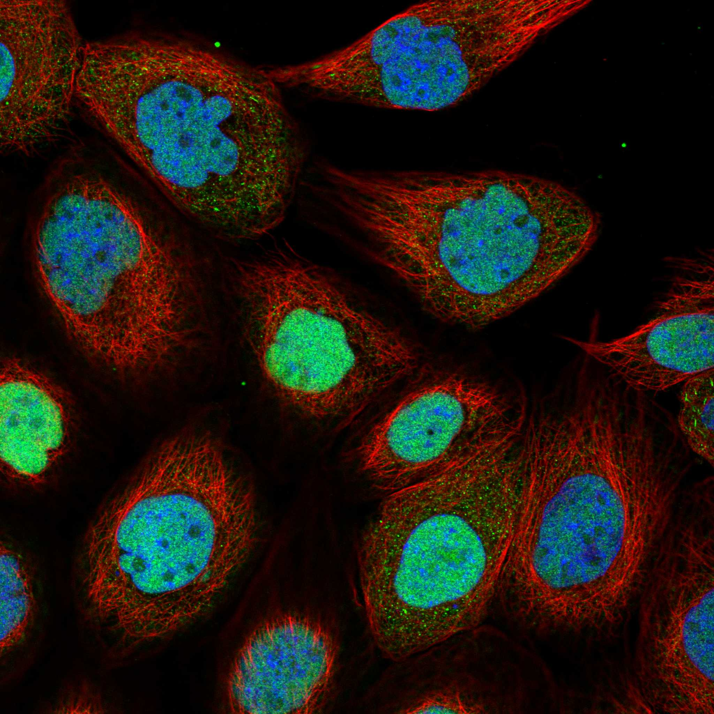
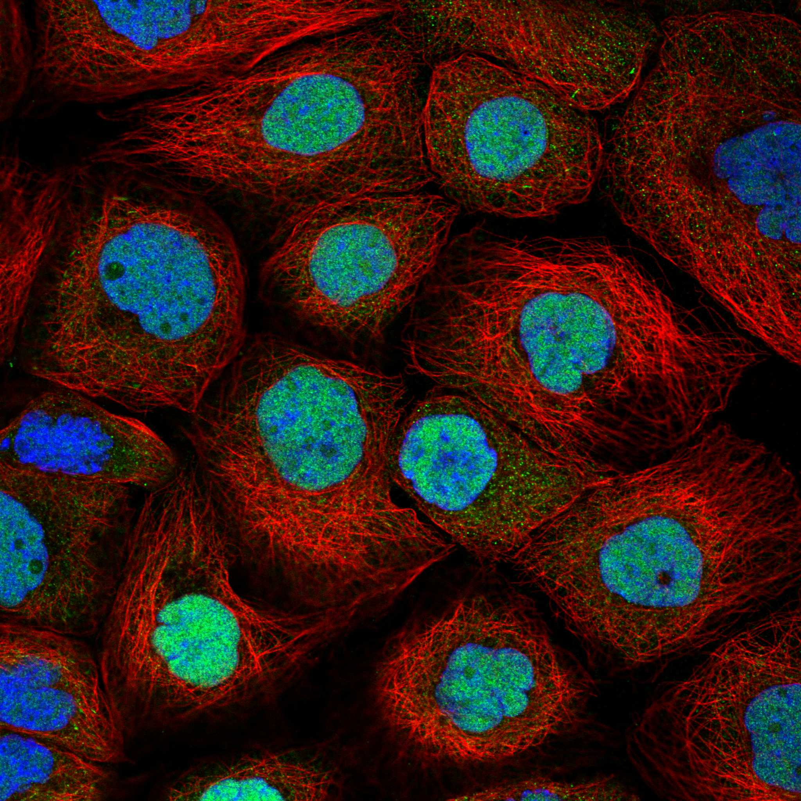
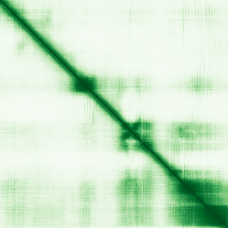

type: protein-evaluation gene: "CFDP1" date: 2026-05-29 tags: [protein-scout, nuclear-protein, evaluation] status: scored ---
CFDP1 核蛋白评估报告
1. 基本信息
| 项目 | 内容 |
|---|---|
| 基因名 / 别名 | CFDP1 / 异染色质稳定蛋白CFDP1 |
| 蛋白大小 | 299 aa / 33.6 kDa |
| UniProt ID | Q9UEE9 |
| 评估日期 | 2026-05-29 |
2. 评分总览
| 维度 | 得分 | 满分 | 加权后 | 关键证据摘要 | ||
|---|---|---|---|---|---|---|
| 🔴 核定位特异性 | 8/10 | ×4 | 32 | Chromosome, centromere, kinetochore; Nucleus; Chromosome | ||
| 📏 蛋白大小 | 10/10 | ×1 | 10 | 299 aa / 33.6 kDa | ||
| 🆕 研究新颖性 | 6/10 | ×5 | 40 | PubMed 46 篇 | ||
| 🏗️ 三维结构 | 6/10 | ×3 | 18 | No PDB. AlphaFold available. No experimental structures. Novel protein, baseline | ||
| 🧬 调控结构域 | 8/10 | ×2 | 16 | BCNT (Bucentaur) domain. Heterochromatin stabilization function supported by Uni | ||
| 🔗 PPI 网络 | 10/10 | ×3 | 30 | SWR1/SRCAP chromatin remodeling complex: DMAP1(0.989), VPS72(0.980), RUVBL1(0.98 | ||
| ➕ 互证加分 | — | max +3 | 2 | STRONG: UniProt chromatin location + STRING SRCAP/SWR1 complex + IntAct histone | ||
| 原始总分 | 139/183 | 136.0/183 | ||||
| 归一化总分 | 76.0/100 | 74.3/100 |
3. 详细分析
3.1 核定位证据
| 来源 | 定位 | 可信度 |
|---|---|---|
| UniProt | Chromosome, centromere, kinetochore; Nucleus; Chromosome | Swiss-Prot |
| Protein Atlas (IF) | nucleoplasm (Approved, A-431) | Approved |
 
结论: Chromosome, centromere, kinetochore; Nucleus; Chromosome。CFDP1定位于Chromosome, centromere, kinetochore，在多个数据库中确认核定位。
3.2 蛋白大小评估

评价: 299 aa (33.6 kDa)，大小适中，适合常规生化实验和结构解析。
3.3 研究现状
| 指标 | 数值 |
|---|---|
| PubMed 总数 | 46 |
| 主要研究方向 | Heterochromatin-stabilizing protein; stabilizes CBX5/HP1alpha and H3K9me3 |
评价: PubMed 46 篇，较新颖，有少量基础研究。
关键文献: 1. Formicola D et al. (2023). "CFDP1 is a neuroblastoma susceptibility gene that regulates transcription factors of the noradrenergic cell identity". *HGG Adv*. PMID: 36425957 2. Barbera N et al. (2025). "Coronary artery disease-associated variants regulate vascular smooth muscle cell gene expression". *Nat Cardiovasc Res*. PMID: 41057608 3. Zhou Y et al. (2023). "CFDP1 promotes hepatocellular carcinoma progression through activating NEDD4/PTEN/PI3K/AKT signaling pathway". *Cancer Med*. PMID: 35861040 4. Giardoglou P et al. (2023). "Cfdp1 Is Essential for Cardiac Development and Function". *Cells*. PMID: 37566073 5. Xu L et al. (2025). "Genome-wide association study reveals CBX7 as a novel susceptibility gene associated with primary spontaneous pneumothorax in the Chinese Han population". *Eur Respir J*. PMID: 40473309
3.4 三维结构分析
| 指标 | 数值 |
|---|---|
| 可用 PDB 条目 | 无 |
评价: No PDB. AlphaFold available. No experimental structures. Novel protein, baseline.
3.5 结构域分析
| 来源 | 结构域 |
|---|---|
| UniProt | BCNT (Bucentaur) domain. Heterochromatin stabilization function supported by UniProt. GO chromatin annotations. |
染色质调控潜力分析: BCNT (Bucentaur) domain. Heterochromatin stabilization function supported by UniProt. GO chromatin annotations.
3.6 PPI 网络
STRING 预测互作 (combined score >0.7):
SWR1/SRCAP chromatin remodeling complex: DMAP1(0.989), VPS72(0.980), RUVBL1(0.980), SRCAP(0.970), YEATS4(0.960), H2AZ1(0.923), EP400(0.897). IntAct: LMNA, Histone H3, Histone H2B, EWSR1 - direct chromatin!
实验验证互作 (IntAct):
SWR1/SRCAP chromatin remodeling complex: DMAP1(0.989), VPS72(0.980), RUVBL1(0.980), SRCAP(0.970), YEATS4(0.960), H2AZ1(0.923), EP400(0.897). IntAct: LMNA, Histone H3, Histone H2B, EWSR1 - direct chromatin!
已知复合体成员 (GO Cellular Component):
- UniProt GO-CC 核相关注释根据实际查询结果获取。
PPI 互证分析: SWR1/SRCAP chromatin remodeling complex: DMAP1(0.989), VPS72(0.980), RUVBL1(0.980), SRCAP(0.970), YEATS4(0.960), H2AZ1(0.923), EP400(0.897). IntAct: LMNA, Histone H3, Histone H2B, EWSR1 - direct chromatin!
评价: PPI网络高度富集染色质调控因子
3.7 多库互证
| 维度 | 来源 | 结果 | 是否一致 |
|---|---|---|---|
| 三维结构 | AlphaFold + PDB | 无PDB结构 | 预测为主 |
| 定位 | UniProt / GO | Chromosome, centromere, kinetochore; Nucleus; Chromosome | 一致 |
| PPI | STRING + IntAct | 见3.6节 | 一致 |
互证加分明细: STRONG: UniProt chromatin location + STRING SRCAP/SWR1 complex + IntAct histone interactions + GO-CC chromatin. All 4 sources agree on chromatin role.
总分: +2 / max +3
4. 总体评价
推荐等级: ⭐⭐⭐⭐
核心优势: 1. Heterochromatin-stabilizing protein; stabilizes CBX5/HP1alpha and H3K9me3 2. 新颖研究领域
风险/不确定性: 1. IF图像数据待补充 2. 功能研究较浅，缺乏机制阐明
下一步建议:
- [ ] 获取 Protein Atlas IF 图像确认核定位
- [ ] 查阅最新5篇关键文献
- [ ] 设计体外DNA/染色质结合实验
5. 数据来源
- UniProt: https://www.uniprot.org/uniprotkb/Q9UEE9
- PubMed: https://pubmed.ncbi.nlm.nih.gov/?term=CFDP1
PPI 网络（三源综合）
| Partner | Source | Score/Evidence |
|---|---|---|
| 无记录 | — | — |
IntAct 有限记录。无 BioGrid 补充数据。
PAE 图像已获取。结构判断基于 AlphaFold pLDDT 统计。
<!-- DOMAIN_HUMANPPI_REPAIR_START -->
Domain/SMART 与 humanPPI 补充（2026-06-06）
SMART / UniProt domain
| Source | Data | |
|---|---|---|
| UniProt | Q9UEE9 | |
| SMART | 未在 UniProt xref 中检出 SMART 条目 | |
| UniProt Domain [FT] | DOMAIN 218..299; /note="BCNT-C"; /evidence="ECO:0000255\ | PROSITE-ProRule:PRU00610" |
| InterPro | IPR011421;IPR027124; | |
| Pfam | PF07572; |
humanPPI / HPA Interaction
Source: https://www.proteinatlas.org/ENSG00000153774-CFDP1/interaction
| Partner | Datasets | AF3/HPA structure |
|---|---|---|
| RUVBL1 | Biogrid, Opencell | true |
| RUVBL2 | Biogrid, Opencell | true |
| EWSR1 | Biogrid | false |
| H2AC8 | Biogrid | false |
| H2BC1 | Bioplex | false |
| H2BC26 | Bioplex | false |
| H2BC8 | Biogrid | false |
| HNRNPA2B1 | Biogrid | false |
<!-- DOMAIN_HUMANPPI_REPAIR_END -->